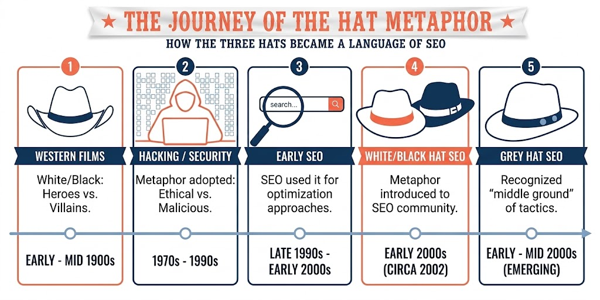
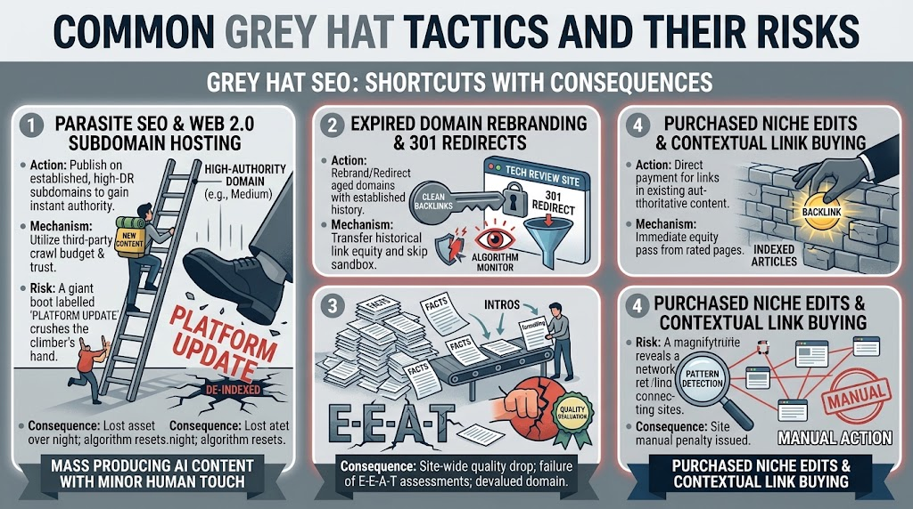
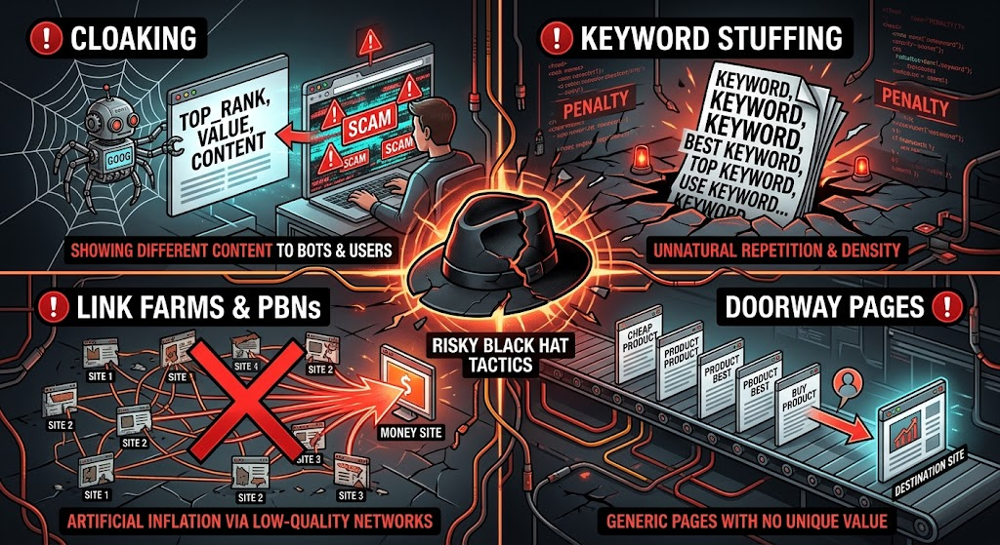
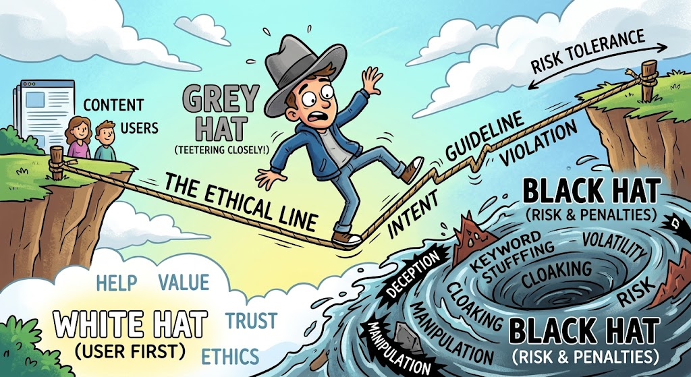
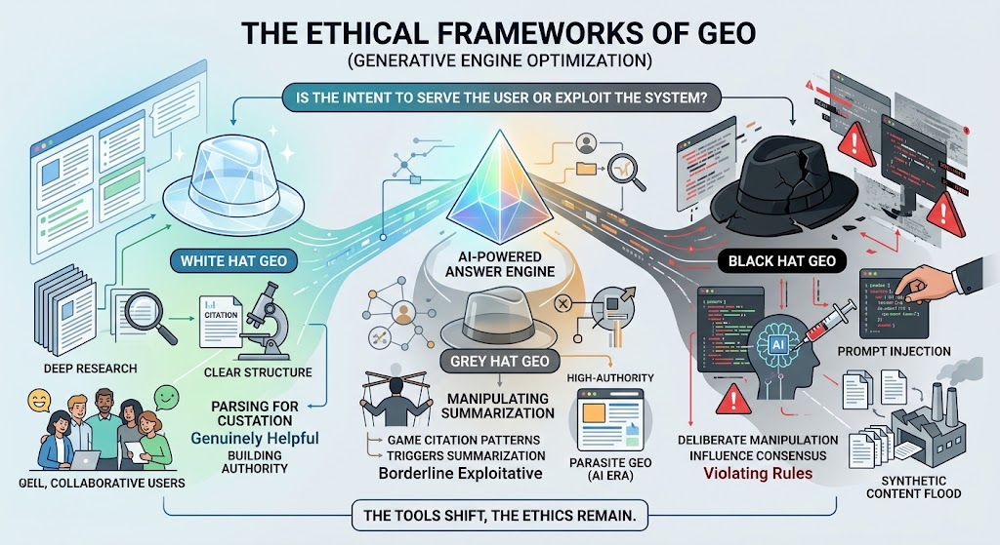
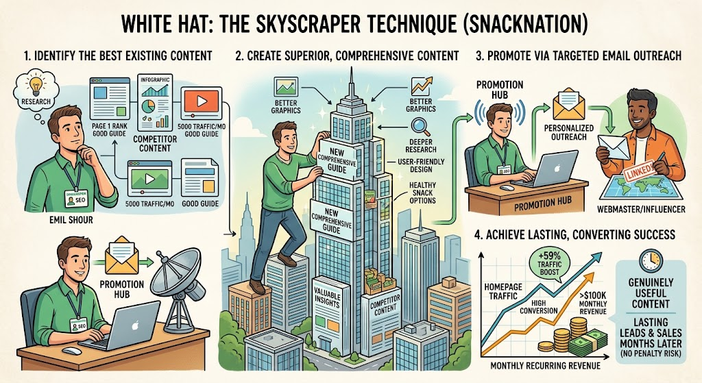
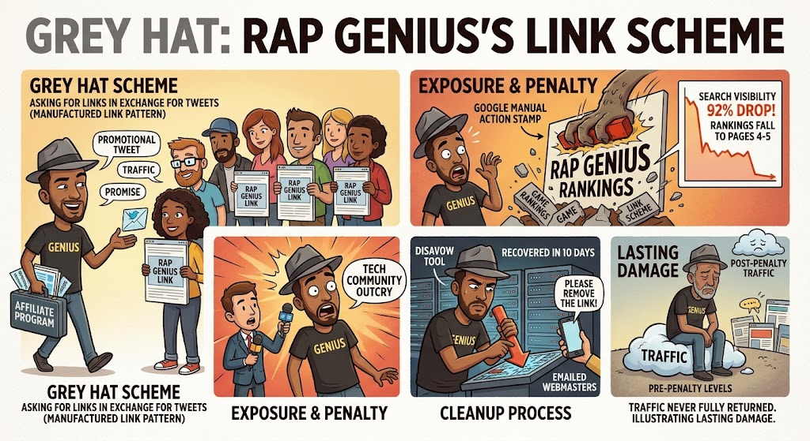
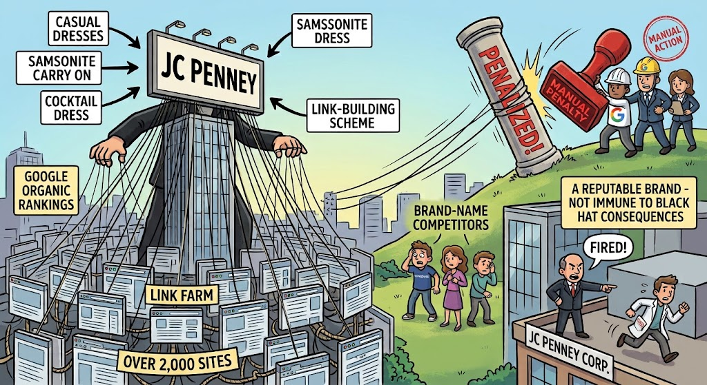

What Is The Hat Metaphor?
Search Engine Optimization has a long-standing history of users abusing algorithms that were put in place to protect search integrity and surface the most useful content for user queries.
Because of that rocky history, SEO techniques — past and present — are often categorized with a color system borrowed from old Western films. In those movies, heroes wore white hats and villains wore black hats so audiences could tell them apart at a glance.
How Does The Hat Metaphor Apply To SEO?
The hat metaphor worked so well in cinema that cybersecurity adopted it to label ethical versus unethical hacking. In the early 2000s the same analogy moved into SEO to describe the ethical standing of search practices.
It quickly became clear that SEO methods were not black and white. An obvious middle ground existed — tactics that were neither fully guideline-aligned nor outright manipulative. That middle ground became Grey Hat SEO.

At a glance
- • White Hat SEO represents strategies that work within search engine guidelines and focus on creating genuine value for users.
- • Grey Hat SEO occupies the middle ground where tactics may push ethical boundaries without blatantly crossing obvious lines.
- • Black Hat SEO refers to deliberate attempts to manipulate rankings using tactics that violate or circumvent search engine guidelines.
What Is White Hat SEO?
White Hat SEO uses ethical optimization strategies that strictly adhere to search engine guidelines to build safe, long-term visibility. Ethical SEO techniques give users something useful — content, a tool, or a product — and deliver it in a way that aligns with those guidelines.
Imagine: Build something worth ranking and the results follow. Properly executed White Hat optimization compounds over time. Unlike Black Hat SEO, where updates constantly threaten short-sighted tactics, sustainable practices build long-term momentum so you continue to benefit from the work.
What Does White Hat SEO Practice Include?
- Creating original, well-researched content that answers real questions
- Optimizing for AI Overviews and generative citations with an answer-first structure
- Earning legitimate backlinks through outreach, partnerships, and useful resources
- Improving site speed, mobile experience, and accessibility
- Using descriptive, honest metadata, headers, and alternative text
Key Benefits Of White Hat SEO
Following guideline-aligned practices supports sustainability and continuous growth. Brands that stack legitimate signals accumulate durable value instead of absorbing the penalties high-risk tactics invite.
Resilience when algorithms change
The risk you avoid: When Google rolls out a major Core or Spam update, Black Hat sites often see catastrophic traffic drops overnight. Major spam-detecting core updates land a few times a year, while Google ships thousands of smaller ranking changes annually.
The ethical payoff: Strategies built on helpful content are more likely to earn ranking stability — or lifts — when quality systems improve, instead of penalties.
Compounding assets instead of rented rankings
The risk you avoid: Deceptive practices require constant maintenance. The moment you stop buying shady links or generating spam, artificial rankings can collapse.
The ethical payoff: Evergreen content backed by solid site structure acts as a permanent asset. An authoritative article can keep attracting organic traffic, leads, and natural backlinks for years with no ongoing manipulative spend.
Higher conversion through user-first design
The risk you avoid: Manipulative SEO may temporarily trick bots into a ranking boost while frustrating humans with thin content, redirects, and slow pages — destroying conversions on arrival.
The ethical payoff: A user-centric approach prioritizes page speed, mobile-first design, and clear valuable content. That experience keeps visitors longer, builds trust, and supports conversions.
Cost efficiency over paid manipulation
The risk you avoid: Link schemes and spam factories create recurring costs. When the tactic fails, both the spend and the rankings disappear.
The ethical payoff: Durable organic assets reduce dependence on continuous paid manipulation and keep working after publication.
Protecting brand reputation
The risk you avoid: If a search engine blacklists a domain or drops it from the index, damage to reputation and revenue can be severe and lasting.
The ethical payoff: Ethics-first strategy protects digital reputation, supports legitimate partnerships and media mentions, and keeps a business safer to scale or sell.
What Is Grey Hat SEO?
Grey Hat SEO occupies the middle ground, where tactics may push the boundaries of accepted practices without necessarily crossing an obvious line. It improves visibility by exploiting gaps in how rules are enforced — taking shortcuts instead of waiting to build genuine trust. It is not always outright deception, but it is not honestly earned authority either.
Imagine:
- Piggybacking on someone else’s authority by publishing there instead of building your own domain over years
- Buying an expired domain mainly for its backlink profile, then repurposing it for an unrelated niche
- Producing mass AI-generated pages with just enough human editing to pass surface-level quality checks
The ideology is opportunistic: Grey Hat SEO sits between strictly following guidelines (White Hat) and deliberately manipulating rankings (Black Hat), driven by calculated risk and pragmatic shortcuts.
What Are Common Grey Hat Tactics And What Makes Them Risky?

Grey Hat SEO uses specific shortcuts for faster results while teetering on the line of compliance. Each technique leans on an algorithm mechanism to skip the waiting game of honest SEO. Rapid gains can look tempting — and each exploit carries a vulnerability that can trigger penalties when detected.
Parasite / third-party publishing
How it works: Publishing optimized content on established high-authority platforms (for example Medium, LinkedIn, or high-DR news subdomains) to borrow crawl budget and authority instead of building it on a new site.
The risk: Platform reliance and host-level crackdowns. Search engines update systems that target subfolder abuse, and hosts can purge accounts or change policies without warning — wiping ranking assets overnight.
Thin AI content at scale
How it works: Generating large volumes of AI content with light human edits to pass basic quality checks.
The risk: Helpful Content updates and site-wide quality drops. AI can produce factual-sounding text while lacking first-hand experience needed for strong E-E-A-T (Experience, Expertise, Authoritativeness, Trustworthiness). Domains dominated by low-value AI pages can be docked as a whole.
Paid niche edits and patterned link buying
How it works: Buying contextual placements in existing articles to inject links at scale.
The risk: Pattern detection and unnatural-link actions. When outbound or inbound link patterns look manufactured, search engines can invalidate link equity or issue manual actions affecting buyer domains.
Practitioners of Grey Hat SEO often accept that today’s loophole may become tomorrow’s penalty — hoping the upside outweighs the fallout. Unlike White Hat SEO, where expectations are clearer, Grey Hat is a constant race against algorithm updates: the tactic works until it doesn’t, then it is on to the next one.
What Is Black Hat SEO?
Black Hat SEO uses deliberate manipulation tactics that violate search engine guidelines to force short-term ranking gains — at the cost of long-term visibility and trust. It differs from White Hat SEO (which aims to provide genuine value) and Grey Hat SEO (which tests the edges of practice): Black Hat deserts ethics altogether and abuses ranking weaknesses without an honest approach.
Imagine:
- Building a network of low-quality sites solely to link back to one target
- Publishing near-duplicate pages to capture more search real estate with no unique visitor value
- Showing search bots one version of a page while humans see something else
- Sabotaging competitors’ hard-won rankings
The ideology is exploitative manipulation. Black Hat SEO makes no attempt to build something worth ranking. If Grey Hat tests boundaries, Black Hat ignores them.
What Are Common Black Hat Tactics And What Makes Them Risky?

While Black Hat SEO promises fast rankings, it trades long-term stability for short-lived gains. Understanding these high-risk tactics is the first step in avoiding catastrophic penalties and protecting hard-earned search equity.
Cloaking
How it works: Showing search bots a keyword-optimized version of a page while human users see different content, so the site can rank for queries the visible page does not answer.
The risk: Cloaking is among the most heavily penalized tactics in Google’s guidelines. Detection can mean immediate de-indexing, not merely a ranking drop.
Keyword stuffing
How it works: Forcing unnatural keyword density into pages to manipulate relevance signals instead of writing for readers.
The risk: Modern ranking systems detect spammy repetition. Pages can lose rankings and contribute to broader site-quality penalties.
Link farms and PBNs
How it works: Manufacturing networks of sites whose primary purpose is to pass link equity to a money page.
The risk: When the network is mapped, link equity can be discounted and participating domains demoted — often with lasting reputation damage.
Doorway pages
How it works: Publishing nearly identical pages, each targeting a keyword variation, mainly to funnel visitors elsewhere for profit.
The risk: Pages that offer no unique value violate guidelines. Doorway pages can be removed and destination sites penalized.
Where Does The Ethical Line Fall?

With Grey Hat SEO teetering so close to Black Hat practice, it is hard to say exactly where the line starts and ends. The uncomfortable truth is that the line is not a single fixed point — it moves with three factors: intent, guideline violation, and risk tolerance.
Intent: Who Is The Tactic Actually Serving?
White Hat techniques put the user first; rankings follow from guideline adherence. Black Hat tactics are built for the algorithm, with users considered only when convenient. Grey Hat sits between: the goal is still to win rankings quickly, but without the outright user/bot deception of cloaking. Buying niche edits does not deceive a reader the way cloaking does, yet it still manipulates a trust signal search engines rely on.
Guideline Violation: Explicit vs. Exploited
Deceptive SEO almost always violates a named rule (cloaking, doorway pages, keyword stuffing). Grey Hat tactics typically exploit a gap or ambiguity in enforcement rather than breaking a specifically prohibited practice. Buying an expired domain is not itself forbidden — using it specifically to inherit unrelated link equity tests the spirit of the rules even when it skirts the letter.
Risk Tolerance: How Much Volatility Can The Site Absorb?
Because Grey Hat manipulates gaps instead of breaking named rules, there is a constant threat that the gap will close. What is Grey Hat today can become Black Hat tomorrow when a search engine names and penalizes the tactic. Choosing Grey Hat means gambling how long a loophole stays open — and how severe the eventual penalty may be.
Does The Hat Metaphor Still Apply In The Age Of GEO?
Search is shifting. Brands no longer compete only for classic SERP real estate; they also face AI-driven systems such as Google’s AI Overviews, ChatGPT, Perplexity, and Gemini. These engines synthesize answers from across the web and cite sources.
That evolution brought Generative Engine Optimization (GEO) — structuring content so AI systems can cite and summarize it, not only rank it as a blue link.
So, do White, Grey, and Black Hat frameworks still apply? Absolutely. The core ethical divide remains even as tactics evolve. The question is not whether people will try to game the system, but how they choose to do it.

How the hat metaphor applies to Generative Engine Optimization
White Hat GEO looks like White Hat SEO always has: well-researched, clearly structured, answer-first content that AI systems can accurately parse and cite.
Grey Hat GEO is emerging as tactics designed to game citation patterns — structuring content mainly to trigger summaries regardless of authority, or publishing on high-authority platforms because models cite them more readily (an AI-era cousin of parasite SEO).
Black Hat GEO is taking shape as deliberate manipulation of AI training and retrieval — for example prompt injection embedded in web content, or flooding the web with synthetic content meant only to influence what models treat as consensus.
As GEO matures and platforms publish clearer guidelines, expect the same white–grey–black spectrum to solidify around it — just as it did for traditional SEO in the early 2000s.
Real-World Case Studies
White Hat: The Skyscraper Technique
"Create something that deserves to rank #1." — Emil Shour

One clear example of White Hat SEO paying off long-term comes from SnackNation, a healthy snack delivery service. Emil Shour, who ran content marketing and SEO, used the Skyscraper Technique: find high-performing content, create something more comprehensive, and promote it through targeted outreach.
Rather than chasing shortcuts, the approach centered on building something more useful than what already ranked. The resulting guide boosted homepage traffic by 59%, and because that traffic converted well, it went on to drive over $100k in monthly recurring revenue — with the content continuing to generate leads months after publication.
This is White Hat SEO delivering on its core promise: create value first, let durable rankings follow.
Grey Hat: Rap Genius's Link Scheme

Genius (formerly Rap Genius) is a textbook example of Grey Hat tactics sliding into Black Hat territory. The company was outed for disguising a link-building scheme as an “affiliate program,” asking bloggers to insert links in exchange for a promotional tweet.
It was not cloaking, but it was a manufactured link pattern designed to game rankings rather than earn them. Once exposed, Google penalized the site — dropping it off page one even for its own brand name. Search visibility metrics showed a 92% drop, with many targeted keywords falling to page four or five.
The company recovered using Google’s disavow tool and webmaster outreach, returning to page one in about ten days — but traffic never fully returned to pre-penalty levels. Even a short-lived Grey Hat penalty can leave lasting damage.
Black Hat: JCPenney's Link Farm

One of the best-known Black Hat cases involves JCPenney. During the 2010 holiday season, the retailer dominated Google results for a wide range of product queries — even outranking brand-name competitors for their own products (for example, searches such as “Samsonite carry on luggage”).
The New York Times investigated and found more than 2,000 separate websites linking back to JCPenney with keyword-rich anchors like “casual dresses” and “cocktail dress,” pointing to the same product pages. The scheme used link farms and deceptive anchor text rather than ethical link building. Google demoted the site for the keywords it had been dominating.
Corporate leadership fired the SEO vendor and claimed ignorance. The case remains a go-to example of how Black Hat consequences can hit brands of any size.
Key Takeaways
- ✓ White Hat SEO asks, “How can I make this website better?”
- ✓ Grey Hat SEO asks, “How far can I push this strategy?”
- ✓ Black Hat SEO asks, “How can I manipulate the system to get the result I want?”
Let's Recap
- White Hat SEO plays by the rules and builds trust over time.
- Grey Hat SEO operates in an ambiguous middle ground, carrying real but often underappreciated risk.
- Black Hat SEO breaks the rules outright, chasing short-term gains at the cost of long-term stability.
The core principle underneath all of it is the same: create value for users, not just for search engines. Algorithms change constantly, but genuine value tends to hold up. Choose your hat wisely — the tactics you adopt today shape how sustainable your visibility is tomorrow.
Conclusion
SEO and GEO are not Western movies, and no one is literally wearing a ranking hat. The metaphor stays useful because it highlights a hard truth: every SEO decision is, in one way or another, an ethical one.
Play by the rules and earn trust. Practice in the grey area and prepare for risk. Break the rules for short-term gains and accept that those choices shape the durability of everything you build.
As search evolves from traditional ranking toward generative engines, the same three-hat framework remains relevant. Techniques change; the underlying question does not.
Are you creating something worth ranking or citing — or trying to outsmart an algorithm you will never truly outsmart?
Play the long game. Build results that last. And before you put on your SEO or GEO hat for the day, ask yourself: which one are you wearing?
Key definitions
- White Hat SEO
- SEO practices that follow search engine guidelines and focus on creating genuine value for users rather than manipulating search rankings.
- Grey Hat SEO
- SEO practices that occupy the uncertain space between accepted optimization and search-engine manipulation, often depending on intent, execution, and scale.
- Black Hat SEO
- SEO practices that deliberately violate or circumvent search engine guidelines to manipulate search rankings.
- Search Engine Optimization (SEO)
- The practice of improving a website and its content to increase its visibility in search engine results.
- Search Engine Guidelines
- Recommendations and policies published by search engines that describe practices intended to help websites appear in search results without manipulating the ranking system.
- Search Engine Manipulation
- The use of tactics intended primarily to influence search rankings through artificial, deceptive, or prohibited signals rather than by improving a website's value or relevance.
- SEO Spam
- Content, links, or other tactics created primarily to manipulate search rankings rather than provide meaningful value to users.
- Cloaking
- A practice that presents different content or information to search engines than it presents to users.
- Doorway Pages
- Pages created primarily to rank for specific search queries and funnel visitors to another destination rather than providing useful standalone information.
- Link Scheme
- A practice involving links created or acquired primarily to manipulate a website's search ranking rather than to provide genuine editorial value.
- Grey Area
- A situation in which an SEO practice does not clearly fall into an accepted or prohibited category and its classification depends on factors such as intent, implementation, or scale.
- Generative Engine Optimization (GEO)
- The practice of structuring and improving content so generative AI and AI-powered search systems can understand, retrieve, evaluate, and accurately represent the information.
- Answer-First Content
- A content structure that provides a direct answer to a clearly defined question before expanding on the topic with supporting explanation, context, and detail.